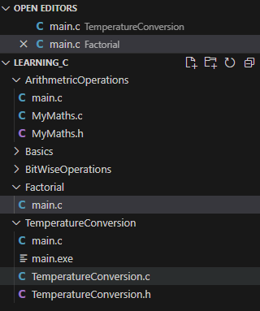

Lab n: Recursion
Recursion is a programming concept where a function calls itself in its own definition. In other words, a recursive function is a function that solves a problem by solving smaller instances of the same problem. This process continues until a base case is reached, at which point the function returns a result without making a recursive call.
Recursion consists of two main components:
-
Base Case:
- This is the terminating condition that prevents the function from calling itself indefinitely. When the base case is met, the recursion stops, and the function returns a specific value.
-
Recursive Case:
- This is the part of the function where it calls itself with a smaller or simpler input. Each recursive call should bring the problem closer to the base case.
Task 1.
- First recursive task is to perform a factorial, to do this we need a new project. Open VSCode and create a new C++ console project, and call it Factorial.
Note: >
As a reminder the factorial of a non-negative integer \( n \), denoted by \( n! \), is the product of all positive integers less than or equal to \( n \). It is defined as:
\[ n! = n \times (n-1) \times (n-2) \times \ldots \times 2 \times 1 \]
For example:
\[ 5! = 5 \times 4 \times 3 \times 2 \times 1 = 120 \]
The factorial function is often used in combinatorics and probability, where it represents the number of ways to arrange \(n \) distinct objects into a sequence.
-
Change the extension of the
Factorial.cpptoFactorial.c
-
Reproduce the following:
#include <stdio.h> int main(){ return 0; } -
Underneath the line
#include <stdio.h>add the defintion of a new function called factorial that returns anintand takes one argument which is also anint.Solution
int factorial(int n);
-
After the closing
}ofmain()write the factorial function that has just been defined, write the head and leave the body empty.Solution
int main(){ ... } int factorial(int n){ } -
Inside the factorial function write an if statement that checks if
nis0or1, and if true, it returns1. Add a comment to the top of the if block that says\\base case.Possible Solution
int factorial(int n) { // Base case if (n == 0 || n == 1) { return 1; } } -
Now add the recusive case which will be the
elseblock. Write thereturnkeyword after the inside theelse{}block. Continuing on the same line multiplynto the result of the factorial function invocation (the recursion). Thefactorial()'s argument should ben - 1Possible Solution
int factorial(int n) { // Base case if (n == 0 || n == 1) { return 1; }else { // Recursive case return n * factorial(n - 1); } } -
Now revist
main()and create a variable calledresultwhich is of the data typeintwhich stores the result of thefactorial(5)as part of it's declaration and initilaisation. On the next line print the variableresultthe prepened string"Factorial: "Possible Solution
int main() { // Example usage int result = factorial(5); printf("Factorial: %d\n", result); // Output: 120 return 0; } -
Run the program and you should see the following:
-
Modifying the factorial function more, you could try and output each result per recursion. Add the following
printfcall in theelseblock above thereturnline:
printf("%d x %d = %d\n",n, (n-1), n * (n - 1));
-
Try printing and see what happens?
Output

So why is this happening, the result is 120 but here it would appear that 2,880 = 20 x 12 x 6 x 2
Call: factorial(5) | └── Print: 5 x 4 = 20 └── Call: factorial(4) | └── Print: 4 x 3 = 12 └── Call: factorial(3) | └── Print: 3 x 2 = 6 └── Call: factorial(2) | └── Print: 2 x 1 = 2 └── Call: factorial(1) | Base Case: return 1 └── Returned: 2 x 1 = 2 └── Returned: 3 x 2 = 6 └── Returned: 4 x 6 = 24 └── Returned: 5 x 24 = 120 Final Result: 120This diagram shows the sequence of recursive calls and how each call contributes to the final result of 120. The base case is reached when n=1, and the recursion starts unwinding, multiplying the results as it goes back up the chain of calls. The final result is the product of all the values calculated during the recursion.
The final result is still 120, but the print statements highlight the individual multiplicative steps in the computation
Code without print statement
#include <stdio.h>
// Function prototype
int factorial(int n);
int main() {
// Example usage
int result = factorial(5);
printf("Factorial: %d\n", result); // Output: 120
return 0;
}
// Function definition
int factorial(int n) {
// Base case
if (n == 0 || n == 1) {
return 1;
} else {
// Recursive case
return n * factorial(n - 1);
}
}
Task 2.
In this task you will create a recursive function to generate the nth term of the Fibonacci series.
0, 1, 1, 2, 3, 5 , 8, 13, 21, 34,…
Here’s how the sequence progresses:
-
Start with 0 and 1.
-
The next number is 0 + 1 = 1.
-
The next number is 1 + 1 = 2.
-
The next number is 1 + 2 = 3.
-
The next number is 2 + 3 = 5. And so on...
Simplified the formula looks like:
\[ùêπ(ùëõ) = ùêπ(ùëõ − 1) + ùêπ(ùëõ − 2)\]
-
Modify the
Recursion.cfile so that thefactorial()call andprintfstatement is commented out:... int main() { /*int result = factorial(5); printf("\nFactorial: %d\n", result); // Output: 120 */ return 0; } .. -
Declare a new function underneath
int factorial(int n);calledfibonaccithat returns and takes an integer as an argument:Solution
#int fibonacci(int n); -
Now create the function body underneath the closing brace of
main():... int fibonacci(int n){ //base case if (n <=1 ){ return n; } else{ // Recursive case return fibonacci(n -1) + fibonacci(n -2); } } int factorial(int n) ... -
Go back to the
main()function and enter the following:int main(){ int n; printf("Enter the value of n: "); scanf_s("%d", &n); // check if the input is non-negative if(n < 0){ printf("Fibonacci sequence is not defined for negative numbers."); }else{ int fibVaule = fibonacci(n - 1); printf("Fibonacci number at position %d is: %llu\n", n, fibValue); } ... return 0; } -
Run the code and supply the 10 as the value for the prompt:
Output

-
Modifying the fibonacci function more, you could try and output each result per recursion. Add the following
printfcall in theelseblock above thereturnline:
printf("(%d - 1) + (%d - 2) = %d\n", n, n, (n - 1) + (n - 2));
-
Try running and see what happens?
Output...
Digrammitcally the program the recurison happens like this:
Call: fibonacci(5) | └── Print: (5 - 1) + (5 - 2) = 5 └── Call: fibonacci(4) | └── Print: (4 - 1) + (4 - 2) = 5 └── Call: fibonacci(3) | └── Print: (3 - 1) + (3 - 2) = 3 └── Call: fibonacci(2) | └── Print: (2 - 1) + (2 - 2) = 1 └── Call: fibonacci(1) Base Case: return 1 Returned: 1 └── Call: fibonacci(0) Base Case: return 0 Returned: 0 Returned: 1 Returned: 2 Returned: 3 Returned: 5 Final Result: Fibonacci number at position 5 is: 5The textual representation above shows the recursive calls and their relationships for the Fibonacci sequence with
n = 5. Let's break down the structure and explain each part:-
Call: fibonacci(5)
- This is the initial call with (n = 5).
- It prints the sum of the two preceding Fibonacci numbers for the current level.
-
Call: fibonacci(4)
- This is a recursive call from the first level with (n = 4).
- It prints the sum of the two preceding Fibonacci numbers for the current level.
-
Call: fibonacci(3)
- This is a recursive call from the second level with (n = 3).
- It prints the sum of the two preceding Fibonacci numbers for the current level.
-
Call: fibonacci(2)
- This is a recursive call from the third level with (n = 2).
- It prints the sum of the two preceding Fibonacci numbers for the current level.
-
Call: fibonacci(1) and fibonacci(0)
- These are base cases, and they don't print the sum.
- They return 1 and 0, respectively.
The diagram shows the hierarchy of recursive calls, where each node represents a call to the
fibonaccifunction with a specific value of (n). The "Print" lines indicate where the sum is printed. The "Returned" lines indicate the value returned from a particular call.The final result is printed at the bottom as "Final Result: Fibonacci number at position 5 is: 5". This is the cumulative result obtained by adding the values returned from the recursive calls.
This kind of diagram is useful for visualizing the flow of recursive calls and understanding how the function evaluates the Fibonacci sequence for a given input.
-
Full Lab code...
#include <stdio.h>
// Function prototype
int factorial(int n);
int fibonacci(int c);
int sizeofthearray(int* arr);
int main() {
int n;
printf("Enter the value of n: ");
scanf_s("%d", &n);
// check if the input is non-negative
if (n < 0) {
printf("Fibonacci sequence is not defined for negative numbers.");
}
else {
int fibValue = fibonacci(n - 1);
printf("Fibonacci number at position %d is: %llu\n", n, fibValue);
}
int result = factorial(5);
printf("\nFactorial: %d\n", result); // Output: 120
return 0;
}
int sizeofthearray(int* arr)
{
size_t some_array_n = sizeof(arr) / sizeof(arr[0]);
printf("Size of array is: %ld", some_array_n);
}
int fibonacci(int n) {
//base case
if (n <= 1) {
return n;
}
else {
printf("(%d - 1) + (%d - 2) = %d\n", n, n, (n - 1) + (n - 2));
return fibonacci(n - 1) + fibonacci(n - 2);
}
}
int factorial(int n) {
// Base case
if (n == 0 || n == 1) {
return 1;
}
else {
// Recursive case
printf("%d x %d = %d\n",n, (n-1), n * (n - 1));
return n * factorial(n - 1);
}
}
Conclusion
Recursion is a powerful and elegant technique, but it should be used with caution. Improper use of recursion can lead to stack overflow errors, and in some cases, it might be less efficient than iterative solutions. However, for certain problems, recursion can provide a clearer and more concise solution.